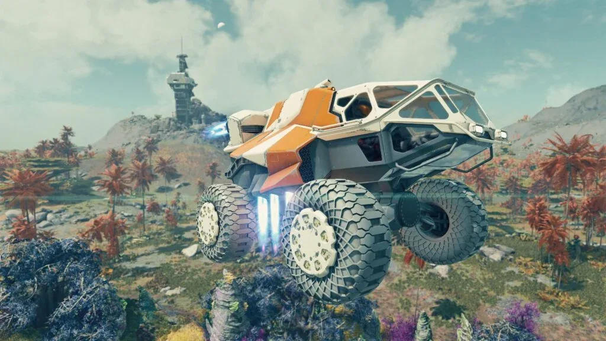

Luiso · 25 de septiembre de 2026
El futuro de Starfield como franquicia vuelve a estar en discusión después de unas declaraciones de Kurt Kuhlmann, quien trabajó como lead systems designer en el RPG espacial de Bethesda. En una entrevista con FRVR, el exdesarrollador aseguró que se sorprendería mucho si finalmente se produce una secuela.
Consultado específicamente sobre la posibilidad de Starfield 2, Kuhlmann fue contundente: “No creo que Starfield haya tenido ni de cerca el éxito suficiente como para hacer un Starfield 2”.
La declaración no representa una confirmación de Bethesda ni de Microsoft sobre el futuro de la franquicia. Se trata de la opinión de un antiguo integrante del equipo, que abandonó Bethesda alrededor del lanzamiento del juego. Sin embargo, sus comentarios resultan particularmente interesantes porque también apuntan a algunos de los problemas de diseño que, desde su perspectiva, limitaron el potencial de Starfield.
Kuhlmann considera que Starfield no terminó siendo exactamente el juego que Todd Howard tenía en mente. Paradójicamente, cree que una eventual secuela podría haber aprovechado todo lo aprendido durante el desarrollo del primer título para acercarse mucho más a esa visión.
“Es una lástima, porque creo que con las lecciones aprendidas en Starfield, un Starfield 2 podría haber estado mucho más cerca del juego que Todd tenía en mente”, explicó el diseñador.
Para Kuhlmann, la propuesta original podía imaginarse como una combinación de exploración planetaria, libertad, construcción de bases, naves modulares, personajes y una historia más integrada. El problema habría sido conseguir que todos esos sistemas funcionaran como parte de una experiencia coherente.
Uno de los ejemplos mencionados por el exdesarrollador es el sistema de construcción de puestos avanzados.
Kuhlmann reconoce que la herramienta funciona correctamente como sistema independiente y permite construir bases prácticamente en cualquier planeta. Sin embargo, considera que está demasiado desconectada de la historia y las misiones principales.
Según explicó, Bethesda ya había tenido dificultades similares con el sistema de asentamientos de Fallout 4. Integrarlo con la narrativa y las misiones generó problemas durante aquel desarrollo y, posteriormente, el sistema quedó más apartado.
La misma situación habría vuelto a aparecer en Starfield: un sistema que requiere una enorme cantidad de trabajo, pero que no necesariamente está conectado con el resto de la experiencia.
Kuhlmann también señaló que el equipo de desarrollo de Starfield necesitaba ser todavía más grande para alcanzar la cantidad de contenido que requería la ambiciosa visión del proyecto.
El problema, según su explicación, fue que muchos de los sistemas incorporados al juego eran nuevos para el equipo. Esto generaba una reacción en cadena: distintos diseñadores necesitaban esperar a que determinadas herramientas estuvieran terminadas antes de poder comenzar a crear contenido alrededor de ellas.
Cuando esos sistemas estuvieron finalmente disponibles, el tiempo restante para producir contenido era cada vez menor.
Esto ayuda a contextualizar otras declaraciones anteriores de Kuhlmann, quien ya había cuestionado si Bethesda tenía realmente la capacidad de materializar la escala que se había propuesto para Starfield.
No. No existe una confirmación oficial de que Starfield 2 haya sido cancelado o que Bethesda haya decidido no hacerlo.
De hecho, Bethesda continúa trabajando en Starfield mediante actualizaciones y contenido adicional, mientras que su principal proyecto conocido sigue siendo The Elder Scrolls VI.
Por ahora, lo que existe es la opinión de un antiguo miembro del equipo: Kuhlmann considera improbable que el rendimiento del primer juego haya sido suficiente para justificar una secuela, aunque al mismo tiempo cree que un segundo capítulo podría haber sido la oportunidad perfecta para corregir varios de los problemas de diseño del original.